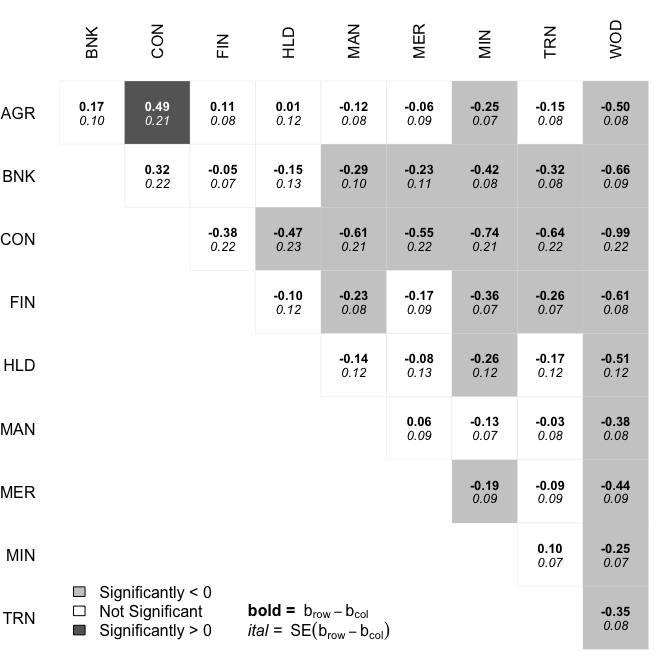
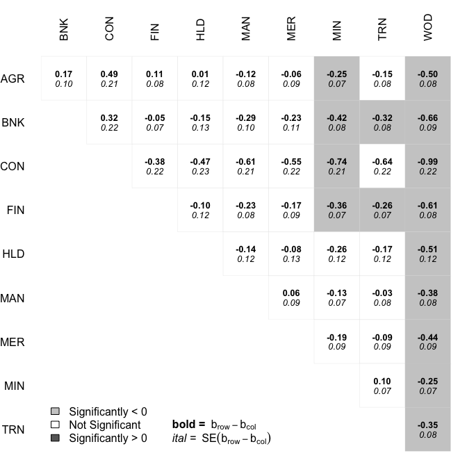
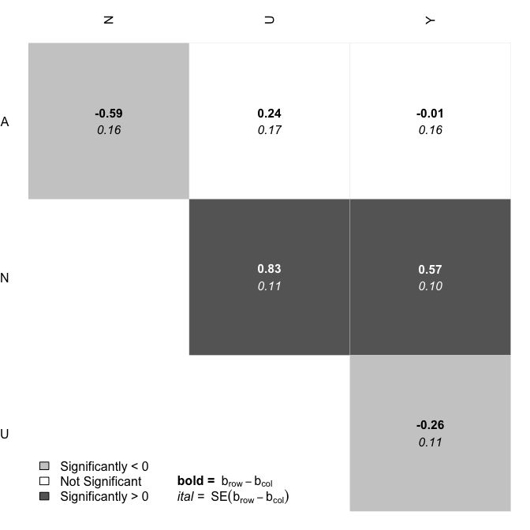
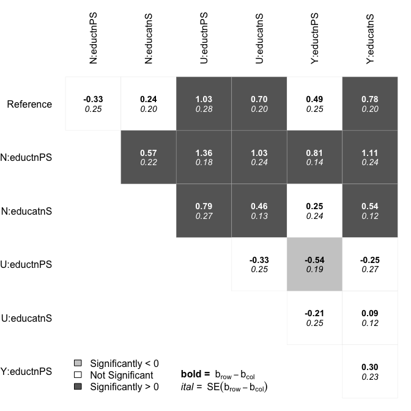

factorplot is an R package that helps visualize pairwise comparisons. It is particularly useful as a post-estimation technique following a (G)LM, multinomial logistic regression or any other multiple comparison procedure done with multcomp. A more thorough discussion of the method and what it produces are here.
The basic idea is that often when variables with multiple categories are used in regression models, we want to know not only the difference between each category and the reference group, but we want to know the differences in all possible pairs of values of that variable. There are lots of methods out there for doing just that, but I developed the factorplot package to be simple to decode relative to its competitors. Here are a few examples of where the factorplot package could be useful.
(G)LM Coefficients.
To show how the factorplot function works for (G)LM coefficients, we are going to use the Ornstein data from the carData package. Here the outcome is interlocking firm memberships and the independent variables are the log of assets, the nation in which the firm resides and the sector in which the firm operates.
library(factorplot)
data(Ornstein, package="carData")
mod <- glm(interlocks ~ log(assets) + sector + nation,
data=Ornstein, family=poisson)
summary(mod)
#>
#> Call:
#> glm(formula = interlocks ~ log(assets) + sector + nation, family = poisson,
#> data = Ornstein)
#>
#> Deviance Residuals:
#> Min 1Q Median 3Q Max
#> -6.7111 -2.3159 -0.4595 1.2824 6.2849
#>
#> Coefficients:
#> Estimate Std. Error z value Pr(>|z|)
#> (Intercept) -0.83938 0.13664 -6.143 8.09e-10 ***
#> log(assets) 0.45145 0.01698 26.585 < 2e-16 ***
#> sectorBNK -0.16651 0.09575 -1.739 0.082036 .
#> sectorCON -0.48928 0.21320 -2.295 0.021736 *
#> sectorFIN -0.11161 0.07571 -1.474 0.140457
#> sectorHLD -0.01491 0.11924 -0.125 0.900508
#> sectorMAN 0.12187 0.07614 1.600 0.109489
#> sectorMER 0.06157 0.08670 0.710 0.477601
#> sectorMIN 0.24985 0.06888 3.627 0.000286 ***
#> sectorTRN 0.15181 0.07893 1.923 0.054453 .
#> sectorWOD 0.49825 0.07560 6.590 4.39e-11 ***
#> nationOTH -0.10699 0.07438 -1.438 0.150301
#> nationUK -0.38722 0.08951 -4.326 1.52e-05 ***
#> nationUS -0.77239 0.04963 -15.562 < 2e-16 ***
#> ---
#> Signif. codes: 0 '***' 0.001 '**' 0.01 '*' 0.05 '.' 0.1 ' ' 1
#>
#> (Dispersion parameter for poisson family taken to be 1)
#>
#> Null deviance: 3737.0 on 247 degrees of freedom
#> Residual deviance: 1547.1 on 234 degrees of freedom
#> AIC: 2473.1
#>
#> Number of Fisher Scoring iterations: 5The factorplot function initially produces no output, but calculates all of the pairwise comparisons.
f <- factorplot(mod, factor.var="sector")There are print, summary and plotting methods for the factorplot object. The print method has an optional argument sig, which if set to TRUE only prints significant differences.
print(f, digits=3, sig=TRUE)
#> Difference SE p.val
#> AGR - CON 0.489 0.213 0.023
#> CON - HLD -0.474 0.235 0.045
#> BNK - MAN -0.288 0.102 0.005
#> CON - MAN -0.611 0.215 0.005
#> FIN - MAN -0.233 0.082 0.005
#> BNK - MER -0.228 0.106 0.032
#> CON - MER -0.551 0.220 0.013
#> AGR - MIN -0.250 0.069 0.000
#> BNK - MIN -0.416 0.084 0.000
#> CON - MIN -0.739 0.210 0.001
#> FIN - MIN -0.361 0.067 0.000
#> HLD - MIN -0.265 0.118 0.026
#> MER - MIN -0.188 0.085 0.029
#> BNK - TRN -0.318 0.082 0.000
#> CON - TRN -0.641 0.217 0.004
#> FIN - TRN -0.263 0.070 0.000
#> AGR - WOD -0.498 0.076 0.000
#> BNK - WOD -0.665 0.095 0.000
#> CON - WOD -0.988 0.215 0.000
#> FIN - WOD -0.610 0.077 0.000
#> HLD - WOD -0.513 0.121 0.000
#> MAN - WOD -0.376 0.080 0.000
#> MER - WOD -0.437 0.090 0.000
#> MIN - WOD -0.248 0.072 0.001
#> TRN - WOD -0.346 0.081 0.000The summary method identifies the number of significant positive, significant negative and insignificant differences with other stimuli.
summary(f)
#> sig+ sig- insig
#> AGR 1 2 6
#> BNK 0 5 4
#> CON 0 7 2
#> FIN 0 4 5
#> HLD 1 2 6
#> MAN 3 1 5
#> MER 2 2 5
#> MIN 6 1 2
#> TRN 3 1 5
#> WOD 9 0 0The plotting method colors each box according to whether and how each difference is significant. For example, the dark-gray box at the nexus of the AGR and CON row and column, respectively, indicates that the agriculture sector has significantly more interlocking board memberships than does the construction sector. The light-gray boxes indicate that the difference is significant in favor of the column rather than the row.
plot(f)
The default means for adjusting for multiplicity is to do nothing, but all of the options of p.adjust are available.
f <- factorplot(mod, factor.var="sector", adjust.method="holm")
plot(f)
GLHT objects.
For those using the glht() function from multcomp, the factorplot function works for these objects, too.
g <- glht(mod, linfct = mcp("sector" = "Tukey"))
s <- summary(g)
plot(factorplot(s))
Multinomial Logit Coefficients
One of the biggest problems with interpreting multinomial logit coefficients is that the reference category problem applies to all variables because it is a function not only of potentially some independent variables, but also of the dependent variable. Here the factorplot function can help.
data("Chile", package="carData")
library(nnet)
mod <- multinom(vote ~ age + sex + education, data=Chile)
#> # weights: 24 (15 variable)
#> initial value 3494.848084
#> iter 10 value 3121.795602
#> iter 20 value 3077.986718
#> final value 3077.985852
#> converged
summary(mod)
#> Call:
#> multinom(formula = vote ~ age + sex + education, data = Chile)
#>
#> Coefficients:
#> (Intercept) age sexM educationPS educationS
#> N 1.0928913 0.00601010 0.58599491 0.3288071 -0.2398034
#> U 0.9496712 0.02041244 -0.24447512 -1.0294778 -0.6974096
#> Y 1.1850035 0.02082591 0.01426536 -0.4851798 -0.7827258
#>
#> Std. Errors:
#> (Intercept) age sexM educationPS educationS
#> N 0.3088481 0.006303204 0.1628414 0.2501653 0.1976728
#> U 0.3166930 0.006485748 0.1717826 0.2778410 0.2012233
#> Y 0.3059721 0.006264887 0.1640342 0.2536581 0.1954040
#>
#> Residual Deviance: 6155.972
#> AIC: 6185.972In the above, the effect of age is the effect of sexM is the effect on the binary choice between the reference (Abstain) and each non-reference level. We can see the effects for all pairs of levels with factorplot.
f <- factorplot(mod, variable="sexM")
plot(f)
Notice that the factorplot shows that all of the differences between non-reference categories are statistically significant. As shown above, one way to specify the factorplot for multinomial logit objects is to give the name of a single regressor. You can also provide the name of a term, for example education, which has multiple regressors in the model. Here, there is a single heading for Reference. The reference here stands in for not only the reference group of education in the non-reference dependent variable categories, but also for all education categories in the dependent variable reference category. This makes sense because all of these parameters are set to 0 for identification purposes. Here is the plot for education:
f <- factorplot(mod, variable="education")
plot(f)
The default method for factorplot will also take as the argument to obj a vector of estimates and a variance-covariance matrix of the estimates as the var argument. Using this method, you could plot factorplots for any estimates you might want.